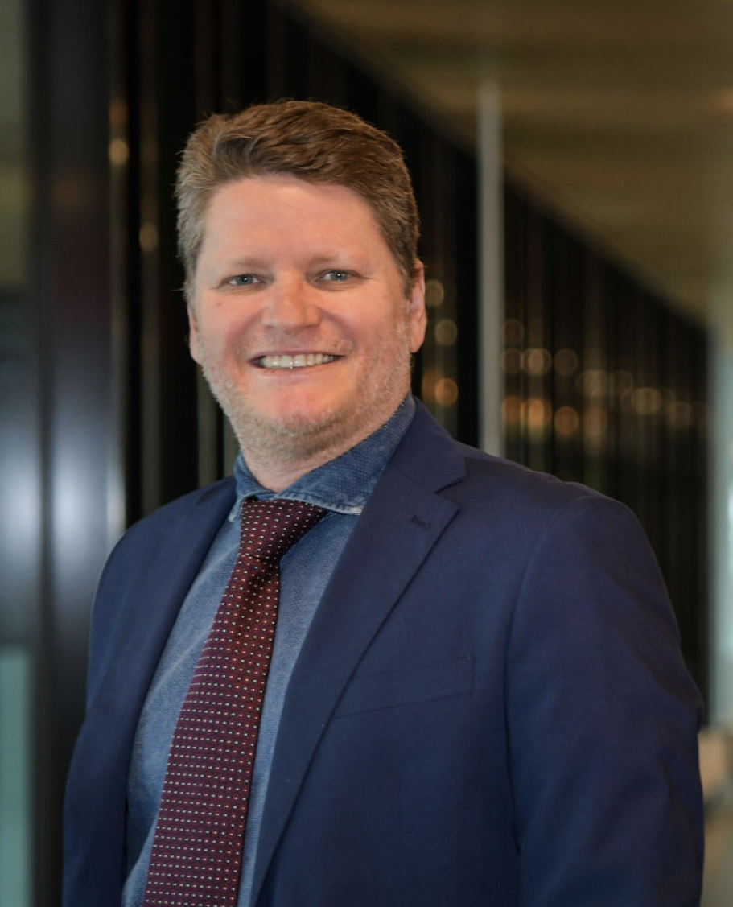

News: MULTI Warehouse Challenge published • Keynote speaker Giancarlo Guizzardi confirmed
The MULTI workshop series is the premier venue for researchers and practitioners working on multi-level modeling and multi-level software development. Multi-level modeling represents a new object-oriented paradigm for both conceptual modelling and software engineering. In contrast to conventional two-level approaches, it supports an unbounded number of classification levels and introduces concepts and mechanims that foster reuse, adaptability, and control. While multi-level languages and tools have reached considerable maturity, the field still offers numerous challenges.
The MULTI workshop series aims at providing a platform for exchanging ideas and promoting further development of multi-level languages, methods, and tools. A particular goal is to encourage the community to, beyond proposing new approaches, analyse different approaches to multi-level modelling and define objective ways to evaluate their respective strengths and weaknesses. Non-exclusive workshop themes in 2023 will be multi-level modeling in education and understanding industry needs.
To be held as a satellite event of the MODELS 2023 conference, MULTI 2023 will strive to accommodate remote participation and presentation, if possible. All accepted papers will be published by IEEE in a companion volume alongside the main proceedings of MODELS 2023.
Call for Papers
MULTI 2023 solicits four kinds of papers:
- regular papers (10 pages).
- challenge submissions (10 pages).
- demo papers (5 pages).
- position papers (5 pages).
Topics for regular and position papers include, but are not limited to:
- the nature of elements in a multi-level hierarchy and how to best represent and present them.
- the importance and role of deep characterization mechanisms, including potency and its variants.
- the structure of MLM frameworks.
- fundamental aspects of MLM, such as model composition and decomposition.
- formal approaches to MLM.
- tool support for MLM.
- MLM in education.
- model management (transformation, code generation etc.) in a multi-level setting.
- integration of modelling and programming languages in a multi-level setting.
- constraints in a multi-level setting.
- definition of behavioral semantics in a multi-level setting.
- methods and techniques for discovering clabjects and their specializations and classification relationships.
- design patterns addressing when and how to apply multi-level metamodelling.
- case studies demonstrating advantages of multi-level techniques.
- applying MLM to large and/or real-world problems.
- criteria and approaches for comparing MLM approaches.
Authors need to submit their papers as PDF files via EasyChair. Submissions must adhere to the IEEE formatting instructions. LaTeX users should use the 8½ x 11 2-column LaTeX Template. Overleaf users should use the IEEE Overleaf Template. Word users should use the IEEE DOCX template (letter). Challenge papers (see section Challenges) must conform to the requirements in the challenge description.
Accepted papers will be included in the MODELS 2023 companion published by the IEEE.
Challenges
Multi-level modeling challenges are designed as benchmark modeling scenarios that aim to support objective comparisons between multi-level modeling approaches and/or deepen the mutual understanding of approaches.
Warehouse Challenge
The "Warehouse" challenge references a domain featuring representations of product copies, product specifications and product specification types. A particular emphasis is on how to guarantee certain properties at the product level without fully determining them, in other words, to support flexible but constrained variability. The submission requirements for the Warehous Challenge and the domain example to use are available from the MULTI Warehouse Challenge Description. In particular note that submitted solutions must have the subtitle "A Contribution to the MULTI Warehouse Challenge".
Collaborative Comparison Challenge
The Collaborative Comparison challenge aims at improving the mutual understanding of approaches within the multi-level modeling community by encouraging collaborations which are an opportunity to justify and thus clarify the need for existing differences, or, alternatively, lead towards homogenizing multi-level modeling.
Towards this end, the Collaborative Comparison Challenge specifically requires the application of two or more approaches to a prescribed domain example and mandates the discussion of commonalities and differences between the approaches in a joint paper authored by proponents of different multi-level modeling approaches.
Commonalities and differences should be discussed as they manifest themselves in the conceptualization of the domain example but also at a more general level. Respective discussion subjects which authors may choose to elaborate on include, but are not limited to, fundamental concepts such as the nature of levels, cross-level relationships, classification vs generalization, deep characterization, the treatment of attributes and operations, and the use of structural and behavioral constraints.
Discussions should seek to explore justifications for, and/or potential reconciliations of, fundamental differences rather than just documenting realization choices. An optional avenue towards contributing to the clarification of differences is the formalization of foundational concepts, thereby possibly discovering open questions and/or potential for unification.
The submission requirements for the Collaborative Comparison Challenge and the domain example to use are available from the MULTI Comparison Challenge Description [1]. In particular note that submitted solutions must have the subtitle "A Contribution to the MULTI Collaborative Comparison Challenge".
Previous Challenges
Solutions to the MULTI Process Challenge [2] are still welcome. Note that submitted solutions must have the subtitle "A Contribution to the MULTI Process Challenge".
References
| [1] | G. Mezei, T. Kühne, V. Carvalho and B. Neumayr, "The MULTI Collaborative Comparison Challenge," 2021 ACM/IEEE International Conference on Model Driven Engineering Languages and Systems Companion (MODELS-C), Fukuoka, Japan, 2021, pp. 495-496, doi: 10.1109/MODELS-C53483.2021.00077. |
| [2] | J. P. A. Almeida, A. Rutle, M. Wimmer and T. Kühne, "The MULTI Process Challenge," 2019 ACM/IEEE 22nd International Conference on Model Driven Engineering Languages and Systems Companion (MODELS-C), Munich, Germany, 2019, pp. 164-167, doi: 10.1109/MODELS-C.2019.00027. |
Important Dates
| Paper Submission: | 17 | July | 2023 | |
| Authors Notification: | 15 | August | 2023 | |
| Camera-ready Papers: | 22 | August | 2023 | |
| Workshop: | ? | October | 2023 |
Organizers

Thomas Kühne |
Zoltán Theisz
Framatome |
Manfred Jeusfeld
University of Skövde |
Program Committee
To be confirmed.Steering Committee
- Colin Atkinson (University of Mannheim, Germany)
- Thomas Kühne (Victoria University of Wellington, New Zealand)
- Juan de Lara (Universidad Autónoma de Madrid, Spain)
Program
Keynote
Giancarlo GuizzardiAn Ontological View on Types
Types are fundamental for modelling, being an essential construct in all major modelling languages. In the last decade, there has been a strong interest in providing support for representing not only first-order types (i.e., types which instances are individuals), but also higher-order types (i.e., types which instances are other types). Despite the fundamental role played by types of all levels in modelling practices, from an ontological point of view, there has been a lack of theoretical support for precisely defining a consensual view on types. In this talk, I discuss the theory of types behind the Unified Foundational Ontology (UFO). This theory is ontologically well-founded, psychologically informed, and formally characterized. Moreover, it has been systematically employed to generate several methodological and computational tools centred around the OntoUML modelling language, but also including instruments for pattern-based model construction, formal verification and validation, anti-pattern detection and rectification, constraint learning and model repair, automated reasoning, complexity management and code generation. As I shall demonstrate, these results offer a sophisticated theory, as well as concrete engineering support for creating and reasoning with ontologically sound taxonomic structures, type-characterizing properties, as well as multi-level schemes.
|  | Giancarlo Guizzardi is a Full Professor of Software Science and Evolution as well as Chair and Department Head of Semantics, Cybersecurity & Services (SCS) at the University of Twente, The Netherlands. He is also an Affiliated/Guest Professor at the Department of Computer and Systems Sciences (DSV) at Stockholm University, in Sweden. He has been active for nearly three decades in the areas of Formal and Applied Ontology, Conceptual Modelling, Business Informatics, and Information Systems Engineering, working with a multi-disciplinary approach in Computer Science that aggregates results from Philosophy, Cognitive Science, Logics and Linguistics. Over the years, he has delivered keynote speeches in several key international conferences in these fields (e.g., ER, BPM, CAiSE - forthcoming). He is currently an associate editor of a number of journals including Applied Ontology and Data & Knowledge Engineering, a co-editor of the Lecture Notes in Business Information Processing series, and a member of several international journal editorial boards. Finally, he is a member of the Steering Committees of ER, EDOC, and IEEE CBI, and of the Advisory Board of the International Association for Ontology and its Applications (IAOA). |
Further program details: To be announced.
Previous MULTI Workshops
- 9th International Workshop on Multi-Level Modelling, MODELS 2022, Montreal, Canada, Hybrid.
(→ 2022 ACM/IEEE 25th MODELS Companion Proceedings)
- 8th International Workshop on Multi-Level Modelling, MODELS 2021, Montreal, Canada, Virtual.
(→ 2021 ACM/IEEE 24th MODELS Companion Proceedings)
- 7th International Workshop on Multi-Level Modelling, MODELS 2020, Montreal, Canada.
(→ 2020 ACM/IEEE 23rd MODELS Companion Proceedings)
- 6th International Workshop on Multi-Level Modelling, MODELS 2019, Munich, Germany.
(→ 2019 ACM/IEEE 22nd MODELS Companion Proceedings)
- 5th International Workshop on Multi-Level Modelling, MODELS 2018, Copenhagen, Denmark.
(→ CEUR Proceedings Vol-2245)
- 4th International Workshop on Multi-Level Modelling, MODELS 2017, Austin, Texas, USA.
(→ CEUR Proceedings Vol-2019)
- 3nd International Workshop on Multi-Level Modelling, MODELS 2016, Saint-Malo, France.
(→ CEUR Proceedings Vol-1722)
- 2nd International Workshop on Multi-Level Modelling, MODELS 2015, Ottawa, Canada.
(→ CEUR Proceedings Vol-1505)
- 1st International Workshop on Multi-Level Modelling, MODELS 2014, Valencia, Spain.
(→ CEUR Proceedings Vol-1286)